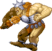

OGRE MASTER BROS
아인슨 마을 (스테이지 5-B) 보스 '오거 마스터 형제' |
기본 정보
클리어 시간 측정의 시작 시점
HP가 보이는 시점 부터
최단 시간 클리어 기록
시프 4:53 |
|||||||||
드랍 가능한 아이템 - 돈 + 점수 아이템 + 그외 아이템의 구성으로 떨어진다.
돈 : 10sp x1 + 1sp x5 (15sp) / 5sp x5 (25sp) / 10sp x2 + 5sp x1 (25sp)
기타 :  스크롤(scroll) 최대 5레벨
스크롤(scroll) 최대 5레벨
녹색의 경우 반지류/완드류/스크롤류를 드랍하지 못한다.
| 점수 아이템 : | |
| 도구류 : | |
| 장비류 : | |
| 완드류 : | - 매직 유저가 있을 때만 드랍 가능. | |
녹색의 경우 반지류/완드류/스크롤류를 드랍하지 못한다.
전형적인 덩치 크고 무식하고 힘쎈 몬스터의 이미지를 가지고 있는 오우거. 전작 TOD의 첫번째 스테이지 보스 였었고 이번에는 동료(보통 형이라 부르는)까지 데려왔다. 힘의 건틀렛(gauntlet of power)'이 전작에서는 '오우거 힘의 건틀렛(gauntlet of ogre power)'였었을 정도로 강력한 힘과 데미지를 자랑한다. 그러나 비교적 HP가 낮고 여러가지 공격을 성공시킬 수 있기 때문에 체감 난이도는 좀 낮은 보스다.
HP에 대한 추가 설명
녹색 오우거가 등장 했을 경우 황색과 녹색의 HP가 합쳐져서 나온다.
녹색 오우거가 나왔을 경우 클리어 점수에 대해서
1인 플레이시 : 황색 오우거를 잡는 즉시 15000xp를 얻게 되며 그 후에 녹색 오우거까지 처리 했을 경우 NICE FIGHT xp(10000)를 얻는다. 만약 녹색 오우거를 먼저 잡았다면 20000xp를 얻고 NICE FIGHT xp로 8000xp를 얻는다. 만약 동시에 잡았다면 황색 오우거를 먼저 잡은걸로 판정한다.
2인 이상 플레이시 : 황색 오우거를 잡은 플레이어가 15000xp를 얻게 되며 그 후에 조건에 맞는 플레이어가 NICE FIGHT xp를 얻는다. 한명의 플레이어가 25000xp를 얻을 수도 있다는 뜻이다. 녹색 오우거를 먼저 잡았을 경우도 마찬가지 공식이 적용되서 한명의 플레이어가 20000xp + 8000xp를 얻을 수 있다.
2인 이상 플레이시 : 황색 오우거를 잡은 플레이어가 15000xp를 얻게 되며 그 후에 조건에 맞는 플레이어가 NICE FIGHT xp를 얻는다. 한명의 플레이어가 25000xp를 얻을 수도 있다는 뜻이다. 녹색 오우거를 먼저 잡았을 경우도 마찬가지 공식이 적용되서 한명의 플레이어가 20000xp + 8000xp를 얻을 수 있다.
패턴 분석
등장
쿵쾅쿵쾅 거리며 돌진을 하면서 황색 오우거가 등장한다. 이때 공격판정이 있기 때문에 생각없이 전진하다가는 맞을 수 있으니 약간 위나 아래로 이동을 해야 한다.
※ 붉은색은 파이터가 입는 데미지, 푸른색은 매직 유저가 입는 데미지.
클레릭/드워프는 파이터에 가까운 데미지를, 시프/엘프는 매직 유저에 가까운 데미지를 입는다.
쿵쾅쿵쾅 거리며 돌진을 하면서 황색 오우거가 등장한다. 이때 공격판정이 있기 때문에 생각없이 전진하다가는 맞을 수 있으니 약간 위나 아래로 이동을 해야 한다.
※ 붉은색은 파이터가 입는 데미지, 푸른색은 매직 유저가 입는 데미지.
클레릭/드워프는 파이터에 가까운 데미지를, 시프/엘프는 매직 유저에 가까운 데미지를 입는다.
| 근접 공격 1 (24/36) | |
| 곤봉을 휘두른다. 가드 후 카운터 공격으로 이 공격을 발동시키기도 하는데 그때는 여러번 휘두른다. 의외로 판정이 넓기 때문에 빈틈을 노리려면 확실하게 뒤를 노려야 한다. 가드 후 카운터 공격으로 발동할 때는 처음 순간에 무적시간이 있기 때문에 주의하도록 한다. |
|
| 근접 공격 2 (22/32) | |
| 곤봉 휘두르기와 성격은 비슷하지만 카운터 공격으로 발동하지는 않는다. 맨 주먹이라 그런지 곤봉을 휘두를 때 보다는 데미지가 약간 적다. 그러나 속도가 빠른 공격이기 때문에 가까이 붙었다가 순간 맞을 수도 있다. | |
| 돌진 (26/40) | |
| 가장 아픈 공격 중 하나다. 머리를 내밀며 돌진할 때도 있고 그냥 달리며 돌진할 때도 있는데 전자의 경우 플레이어를 향해 달려들 때 나오며 후자의 경우 화면밖으로 벗어났을 때 나온다. 준비동작이 없어서 가까운 거리에서 기습적으로 당할 수도 있으니 주의하자. 가드가 가능하지만 괜히 무리하게 맞상대 하지말고 그 후의 빈틈을 노리자. 돌진 후에 잠깐 무방비 상태로 미끄러지기 때문에 그 때 빈틈을 노릴 수 있다. 오우거의 공격 중 가장 조심해야 할 공격이다. |
|
| 점프 찍기 (26/40) | |
|  | 황색 오우거 전용 공격 패턴으로 녹색 오우거와 함께 있을 때 나오는 공격이다. 높이 뛰어서 내려찍는 공격이며 돌진과 함께 가장 아픈 공격이다. 하지만 체공시간이 길어서 뻔히 보이기 때문에 맞을 일은 별로 없다. 그러나 착지 순간에 약간의 충격파가 발생헤서 너무 성급하게 접근했다가는 데미지를 입을 수 있다. |
| 돌 던지기 (17/25) | |
| 녹색 오우거 전용 공격 패턴으로 거리가 벌어져 있을 때 돌격보다는 주로 이 공격을 한다. 큼지막한 돌을 던지는데 날아오는 속도는 빠른 편 이지만 준비동작이 충분히 보이기 때문에 피하기 쉽다. 또한 가드도 가능하다. |
|
녹색 오우거가 등장하는 조건
황색 오우거의 HP가 50%이하로 떨어지면 스테이지 중앙으로 돌진 한 후 울부짖는다(?). 그 후에 녹색 오우거가 등장한다. 황색 오우거의 HP가 50%이하로 떨어졌을 때 일어나서 달리는 순간부터는 완전 무적이기 때문에 녹색 오우거가 보기 싫다면 황색 오우거가 완전히 일어나기 전에 잡아야 한다.
50%의 HP를 실제로 나타내면 아래와 같다.
50%의 HP를 실제로 나타내면 아래와 같다.
| 1인 플레이시 실제 HP | |
| 2인 플레이시 실제 HP | |
| 3인 플레이시 실제 HP | |
| 4인 플레이시 실제 HP |
공통 공략법
황색 오우거만 잡아야 된다고 보면 HP가 50%이하로 떨어졌을 때 움직이지 못하게 하고 잡아야 하는데 이게 클래스에 따라 어려울 수 있기 때문에 공략법은 확실히 알아야 한다.
그래도 등장할 때 뒤가 비기 때문에 쉽게 공격을 시작할 수 있고 덩치가 크기 때문에 클레릭 1p를 제외하면 해머가 2히트가 쉽게 나오며 또한 쓰러졌을 때의 피격 판정이 높아서 다양한 공격을 성공시킬 수 있다.
◎ 파이터/시프/엘프의 앉아서 공격이 명중한다.
다시 말하면 클레릭/드워프 뿐 만이 아니라 이 셋도 12연사가 가능하다는 뜻 이다. 이로 인해 녹색 오우거를 보지 않고 황색 오우거를 어렵지 않게 잡을 수 있다.
그외에 쓰러진 오우거에게 명중이 가능한 공격을 보면(원래부터 하단 히트가 가능한 공격은 제외)
파이터 : 강공격/대쉬 공격/D키 공격/슬래쉬/대공기/A+B. * A+B가 2히트가 이루어진다는 점이 중요.
클레릭 : 슬래쉬/점프 ↓A도 명중이 가능하다.
시프 : 대쉬 공격/D키 공격/슬래쉬/대공기의 1타
드워프 : 강공격/대쉬 공격/D키 공격(2히트)/슬래쉬
엘프 : 강공격/대쉬 공격/슬래쉬/대공기의 1타/A+B. * A+B가 다단 히트가 된다는 점이 중요.
◎ 오우거의 남은 HP바를 잘 주시할 것.
녹색 오우거를 보기 싫다면 HP가 언제쯤 50%이하로 떨어지는지를 잘 눈여겨 봐야 한다.
◎ '그림자 치기'의 활용
'그림자 치기'가 잘먹히는 보스 중 하나다. 그림자 치기 위치에서 공격을 해서 먹히면 콤보를 넣어주면 되고 가드를 하면 몽둥이를 휘두르고 있는 사이에 뒤를 잡아서 공격도 가능하다. 실수를 해서 오우거가 돌아다니게 된다면 철저하게 그림자 치기로 대응하면 된다.
그래도 등장할 때 뒤가 비기 때문에 쉽게 공격을 시작할 수 있고 덩치가 크기 때문에 클레릭 1p를 제외하면 해머가 2히트가 쉽게 나오며 또한 쓰러졌을 때의 피격 판정이 높아서 다양한 공격을 성공시킬 수 있다.
◎ 파이터/시프/엘프의 앉아서 공격이 명중한다.
다시 말하면 클레릭/드워프 뿐 만이 아니라 이 셋도 12연사가 가능하다는 뜻 이다. 이로 인해 녹색 오우거를 보지 않고 황색 오우거를 어렵지 않게 잡을 수 있다.
그외에 쓰러진 오우거에게 명중이 가능한 공격을 보면(원래부터 하단 히트가 가능한 공격은 제외)
파이터 : 강공격/대쉬 공격/D키 공격/슬래쉬/대공기/A+B. * A+B가 2히트가 이루어진다는 점이 중요.
클레릭 : 슬래쉬/점프 ↓A도 명중이 가능하다.
시프 : 대쉬 공격/D키 공격/슬래쉬/대공기의 1타
드워프 : 강공격/대쉬 공격/D키 공격(2히트)/슬래쉬
엘프 : 강공격/대쉬 공격/슬래쉬/대공기의 1타/A+B. * A+B가 다단 히트가 된다는 점이 중요.
◎ 오우거의 남은 HP바를 잘 주시할 것.
녹색 오우거를 보기 싫다면 HP가 언제쯤 50%이하로 떨어지는지를 잘 눈여겨 봐야 한다.
◎ '그림자 치기'의 활용
'그림자 치기'가 잘먹히는 보스 중 하나다. 그림자 치기 위치에서 공격을 해서 먹히면 콤보를 넣어주면 되고 가드를 하면 몽둥이를 휘두르고 있는 사이에 뒤를 잡아서 공격도 가능하다. 실수를 해서 오우거가 돌아다니게 된다면 철저하게 그림자 치기로 대응하면 된다.